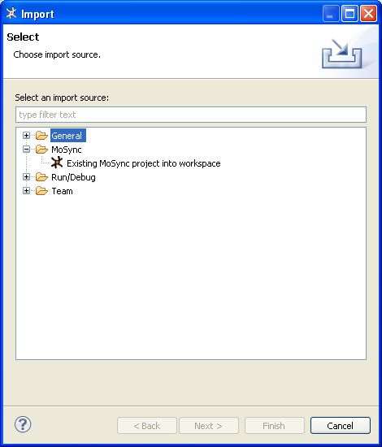
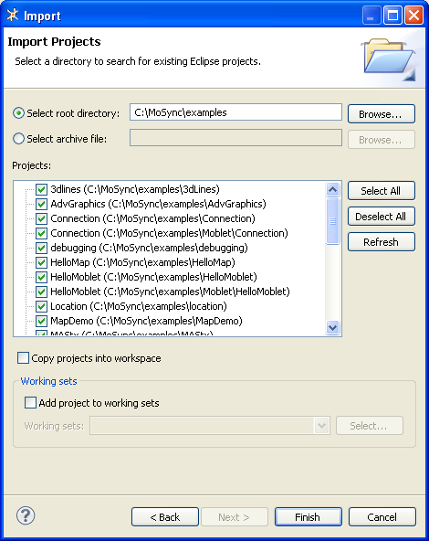

Here we show you how to import projects and files into MoSync. We give detailed instructions on how to import existing MoSync projects, and some information about importing other resources like archives, files systems, preference settings, breakpoints, launch configurations, and team project sets.
To see an existing MoSync project in your current workspace, you need to import it.
The Import wizard guides you through all the necesary steps of the import process and allows you to set various options.
Note: You can follow these steps to import our example applications (which of course are just another type of project). However, there is a much quicker way of importing them, which we describe in Importing the Examples.
Open the Import wizard in one of the following ways:

Choose the import source by opening the MoSync group, selecting Existing MoSync project into workspace, and clicking Next. The Import Projects dialog will open.
Select the Select root directory option and click its Browse button.
Browse for the folder where your projects are stored, highlight it, and click OK.
A list of the projects available for import will be displayed (in this case it is example application projects in our \examples folder):

You have the choice of copying the projects into the workspace or leaving them in their current location.
Make sure that the checkboxes of the projects you want to import are ticked, then click Finish to import the projects into your workspace.
The Import wizard can also be used to import other types of projects and files. Many of these import options will be familiar to Eclipse users. A brief overview of the available options is given in the table below.
| General > Archive File | Standard Eclipse import of a previously exported archive file |
| General > Existing MoSync project into workspace | see Importing Existing MoSync Projects above |
| General > Existing Project into Workspace | Standard Eclipse project import |
| General > File System | Standard Eclipse file/folder import. This option is useful for bringing legacy C/C++ files into the workspace. Create a project first, then import your files/folders into it |
| General > Preferences | Standard Eclipse import of previous exported preferences (i.e. as set in Windows > Preferences). Useful for transferring preference between Eclipse instances |
| MoSync > Existing MoSync project into workspace | see Importing Existing MoSync Projects above |
| Run/Debug > Breakpoints | Standard Eclipse import of a previously exported breakpoints file |
| Run/Debug > Launch configurations | Standard Eclipse import of a previously exported launch configurations file. This can be very useful. When you select Run As... in MoSync, a launch configuration is created. This launch configuration contains settings like screen size, which project to run, which build configuration to use, and so on. |
| Team > Team Project Set | Standard Eclipse import of a previously exported Team Project Set. |